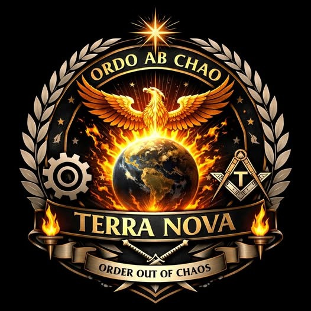

Ordo ab Chao: The Terra Nova Mandate

Download Article #148 as a Word document
TERRA NOVA DEVELOPMENT | ARTICLE #148
Chaos is no longer an occasional disturbance in human affairs — it has become the ambient condition of our age. We see it in collapsing institutions, in the paralysis of governments, in the fragmentation of communities, and in the exhaustion of old belief systems that no longer speak to the modern mind. We see it in economics, in culture, in geopolitics, and even in the digital sphere where information itself has become unstable. Humanity is living through a global disorientation, a kind of cosmic turbulence.
And yet, chaos is not the enemy. Chaos is the raw material from which new orders are born.
For centuries, people turned to three sources for stability: government, religion, and the masses themselves. But today, none of these are capable of producing coherent solutions at the scale required.
Governments are too slow, too divided, too captured by legacy interests. Religions are too fragmented, too doctrinal, too anchored in ancient frameworks. And democratic masses — the followers — are too overwhelmed, too misinformed, too reactive to lead systemic change.
The world is waiting for solutions that none of these institutions can deliver.
This is where Terra Nova enters.
Terra Nova is founded on a simple, radical, and unmistakably modern principle:
Order out of chaos will come from righteous corporations — entities that operate outside government, but fully within the legal framework, with the singular mission of solving problems directly.
Not lobbying. Not protesting. Not waiting. Not asking permission. Building.
Terra Nova is not a political movement. It is not a religion. It is not a grassroots uprising. It is a problem-solving engine — a new category of civilization actor.
Where governments debate, Terra Nova executes. Where religions preach, Terra Nova designs. Where the masses argue, Terra Nova builds.
The world does not need more ideology. It needs competence. It needs clarity. It needs solutions so obvious, so straightforward, and so effective that people begin to realize something profound:
There is no reason to wait for government. There is no reason to wait for religion. There is no reason to wait for the followers to agree.
We can fix this ourselves.
This is the Terra Nova doctrine.
We present solutions that are not theoretical, not utopian, not abstract — but immediately implementable. Clean water systems. Housing systems. Food systems. Transportation systems. Digital governance systems. Community systems. All designed with modern tools, modern engineering, and modern intelligence.
This is not rebellion. This is not revolution. This is replacement-by-performance.
When a righteous corporation solves a problem faster, cheaper, cleaner, and more humanely than any government or religious institution, people naturally shift their trust. They shift their expectations. They shift their allegiance.
This is how order emerges from chaos — not by force, not by ideology, but by competence demonstrated at scale.
The Venus Project imagined a world redesigned from the ground up. Terra Nova takes that spirit and brings it into the real world, with real tools, real engineering, and real implementation. Not a vision — a blueprint. Not a blueprint — a build.
Terra Nova is the next evolutionary step in human organization: a civilization built by those who choose to solve instead of argue.
Ordo ab Chao. Order out of chaos. Not as a motto of secrecy, but as a public declaration of intent.
The world is ready. The chaos is here. And Terra Nova is stepping forward.